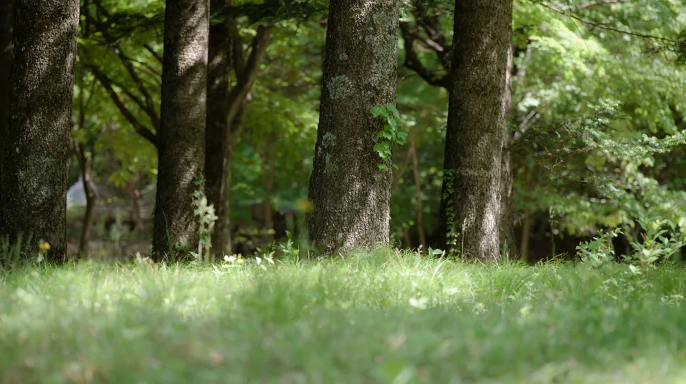

한방 힐링 프로그램 비교: 나에게 딱 맞는 치유법 찾는 3가지 기준
사진: Sangmin Jeong / Pexels (무료 이미지, 출처 표기)
지친 몸과 마음, 한방 힐링으로 되찾으세요!

지친 일상 속에서 몸과 마음의 균형을 찾고 싶으신가요? 스트레스, 불면증, 만성 피로 등 현대인의 고질병에 시달리고 있다면, 전통 한의학의 지혜를 담은 한방 힐링 프로그램이 좋은 대안이 될 수 있습니다. 수많은 프로그램 중 나에게 맞는 것을 고르기란 쉽지 않은데요. 이 글에서는 2026년 9월 기준으로 다양한 한방 힐링 프로그램을 비교하고, 여러분의 필요에 꼭 맞는 치유법을 선택할 수 있도록 실질적인 가이드를 제공합니다.
한방 힐링 프로그램, 왜 주목받을까요?
한방 힐링 프로그램은 단순한 휴식을 넘어, 개인의 체질과 증상에 맞춰 몸과 마음의 근본적인 회복을 돕는 데 중점을 둡니다. 자연 친화적인 환경에서 명상, 요가, 약선 음식(약효가 있는 재료로 만든 음식), 한방 치료 등을 통해 스트레스를 해소하고, 면역력을 강화하며, 신체 균형을 되찾을 수 있다는 장점이 있습니다. 특히, 전문가의 진단과 상담을 바탕으로 진행되는 경우가 많아 신뢰도가 높습니다.
나에게 맞는 한방 힐링 프로그램 선택 기준 3가지
성공적인 한방 힐링 경험을 위해서는 자신에게 가장 적합한 프로그램을 선택하는 것이 중요합니다. 다음 3가지 기준을 바탕으로 나에게 맞는 프로그램을 찾아보세요.
- 치유 목표 명확화: 프로그램을 통해 얻고 싶은 것이 무엇인지 먼저 생각해 보세요. 스트레스 해소, 면역력 증진, 디톡스, 체중 관리, 특정 통증 완화 등 구체적인 목표를 설정하면 프로그램 선택의 폭을 좁힐 수 있습니다.
- 프로그램 구성 확인: 어떤 내용으로 구성되어 있는지 살펴보세요. 한의사의 상담 및 진료가 포함되는지, 침·뜸·부항 등 한방 치료가 제공되는지, 요가·명상·산림욕 등 심신 수련 활동이 있는지, 약선 식단이나 한방차가 제공되는지 등 세부 내용을 확인합니다.
- 기간 및 예산 고려: 당일 프로그램, 1박 2일, 혹은 장기 숙박 프로그램 등 다양한 기간이 있습니다. 또한, 프로그램 구성에 따라 가격대도 천차만별이므로, 자신의 일정과 예산에 맞춰 선택하는 것이 현명합니다.
주요 한방 힐링 프로그램 유형별 특징 비교
다양한 기관에서 운영하는 한방 힐링 프로그램은 그 목적과 구성에 따라 여러 유형으로 나눌 수 있습니다. 2026년 9월 기준으로 대표적인 유형별 특징은 다음과 같습니다.
정확한 프로그램 내용과 비용은 각 기관의 공식 홈페이지에서 다시 확인하시길 권장합니다.
한방 힐링 프로그램, 어떻게 예약하고 이용하나요?
대부분의 한방 힐링 프로그램은 온라인 또는 전화로 예약할 수 있습니다. 다음 단계를 참고하여 프로그램을 준비해 보세요.
- 정보 탐색 및 비교: 관심 있는 프로그램의 공식 홈페이지를 방문하여 프로그램 내용, 기간, 비용, 포함 내역 등을 상세히 확인합니다. 한국관광공사 등 공공기관에서 제공하는 웰니스 관광 정보도 유용합니다.
- 상담 요청: 일부 프로그램은 개인의 건강 상태나 목적에 따라 맞춤형 상담을 진행합니다. 궁금한 점이나 특별히 고려해야 할 사항이 있다면 반드시 사전에 문의하여 충분한 정보를 얻는 것이 좋습니다.
- 예약 및 결제: 원하는 프로그램을 선택했다면 안내에 따라 예약 및 결제를 진행합니다. 취소 및 환불 규정을 미리 확인하는 것도 중요합니다.
- 준비물 확인: 프로그램별로 필요한 준비물(편한 복장, 세면도구, 개인 상비약 등)이 다를 수 있으므로, 출발 전 반드시 확인하여 불편함 없이 참여할 수 있도록 준비합니다.
성공적인 한방 힐링을 위한 체크리스트
만족스러운 한방 힐링 경험을 위해 마지막으로 몇 가지를 더 확인해 보세요.
- 개인 건강 상태 고려: 특정 질환을 앓고 있거나 알레르기가 있다면 반드시 사전에 프로그램 운영진에게 알리고 상담을 통해 참여 가능 여부를 확인합니다.
- 후기 및 평가 확인: 다른 이용자들의 후기를 참고하여 프로그램의 장단점, 실제 만족도 등을 파악해 보세요.
- 전문성 여부: 한의사, 전문 강사 등 해당 분야의 전문가가 상주하며 프로그램을 운영하는지 확인하면 더욱 신뢰할 수 있습니다.
- 접근성 및 편의 시설: 대중교통 이용이 편리한지, 숙소는 청결한지, 주변 편의 시설은 충분한지 등 전반적인 이용 환경도 고려하는 것이 좋습니다.
🔗 이 글도 함께 보면 좋아요: 한방 힐링 프로그램, 나에게 맞는 곳은? 핵심 체크리스트로 알아보세요!
관련 추천 상품
이 포스팅은 쿠팡 파트너스 활동의 일환으로, 이에 따른 일정액의 수수료를 제공받습니다.